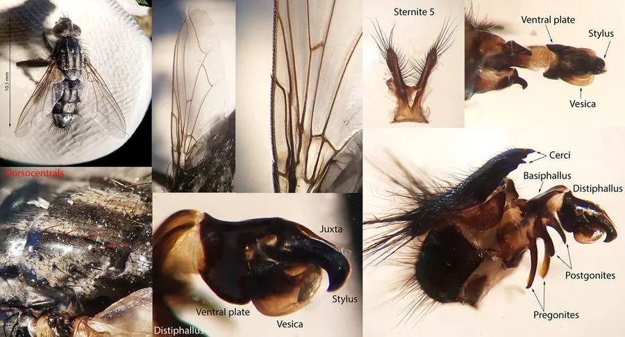

昆虫 · 动物界
麻蝇 Sarcophaga carnaria

胸背有灰黑纵条纹的大型苍蝇，多数种类以卵胎生方式直接产下幼虫，是腐肉和动物尸体上的常见访客。
- 分类
- 门节肢动物门纲昆虫纲目双翅目科麻蝇科属麻蝇属
- 栖息环境
- 腐肉、动物尸体、粪便、垃圾堆和人类居住区
- 地理分布
- 全球广泛分布，中国各地均有
- 保护级别
- 暂无评估
物种志
麻蝇成虫体长 10–15 mm，体色灰黑，胸部背板有三条明显的黑色纵条纹，腹部有黑色与灰色相间的棋盘状斑纹，复眼红褐色。它的体型比家蝇大，体表多刚毛。
麻蝇全球分布，成虫在腐肉、动物尸体、粪便和垃圾上活动。多数麻蝇为卵胎生，雌蝇不产卵，而是直接产下已经孵化的幼虫，幼虫随即在腐肉中取食发育。麻蝇幼虫发育很快，在温暖的季节几天到两周就能完成幼虫期。麻蝇是法医昆虫学中常见的物种，其幼虫也能寄生昆虫或蜗牛。它会在食物上停留，可能传播肠道病原体，因此是食品卫生和防疫监测的对象。目前它没有IUCN 的正式评估，中国未将其列入国家重点保护野生动物名录。
形态与习性
- 食性幼虫以腐肉为食，成虫取食腐肉渗出液和甜味物质
- 体长10–15 mm
- 繁殖卵胎生，雌蝇直接产下已孵化的幼虫
- 寿命约 1–2 个月
- 法医作用尸体上的麻蝇幼虫可用于推断死亡时间
- 卫生危害停留在食物上，可能传播肠道病原体
趣味知识
- 麻蝇胸背的三条黑色纵纹，是识别它的重要特征。
- 许多麻蝇不产卵，而是直接产下已经孵化的幼虫，这叫卵胎生。
- 麻蝇会出现在动物尸体上，是法医昆虫学调查的对象。